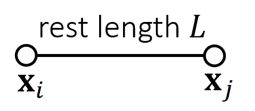
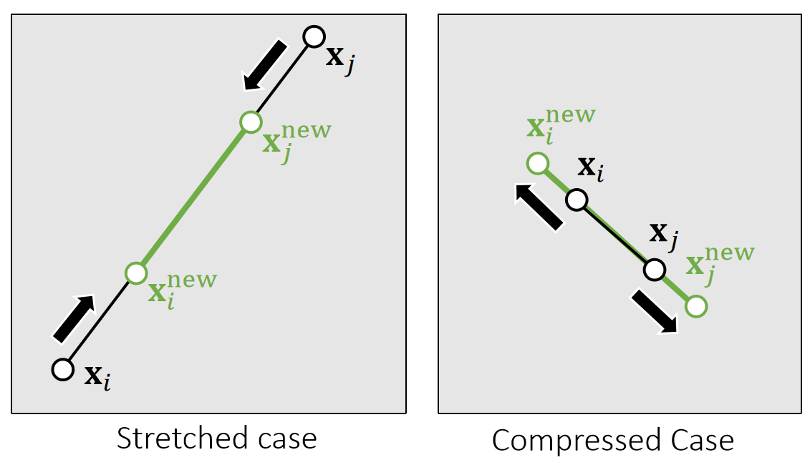
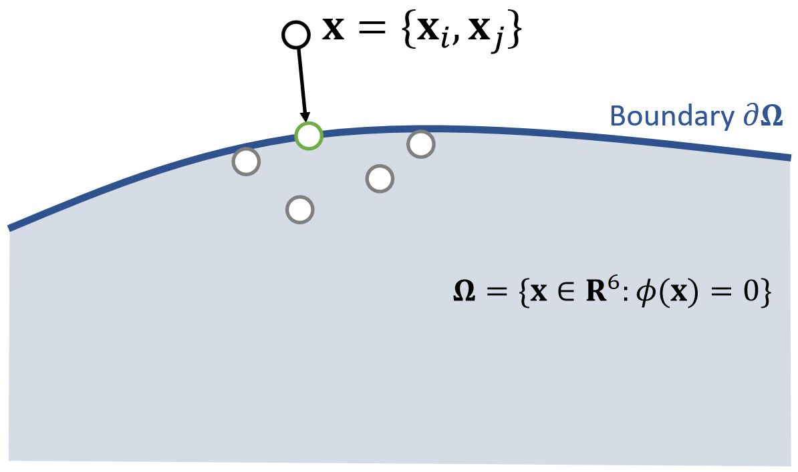
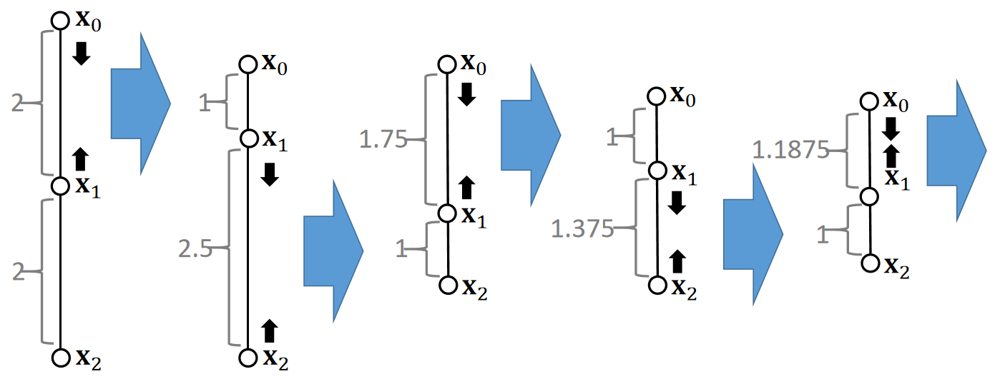
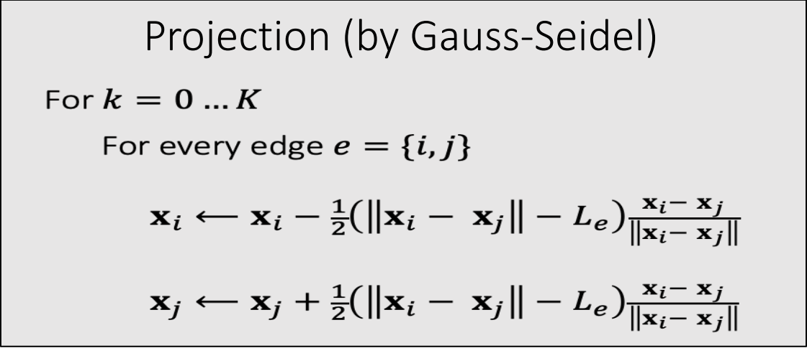
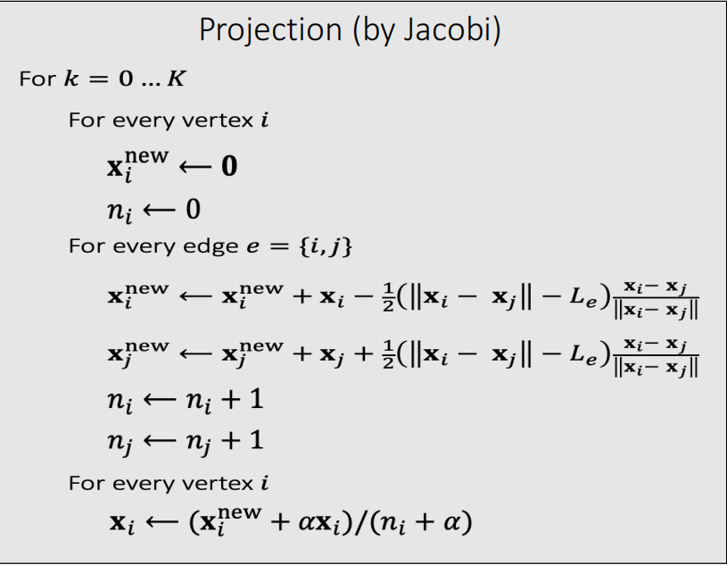

Position Based Dynamics (PBD)
每个顶点独立仿真，也不用考虑弹簧力。
顶点独立运动后，约束被破坏。通过投影的方式保持约束。投影是指，直接当前的(不合理的)状态直接变成最近的合理的状态。难点在于怎么找到最近的合理的状态。
---
title: PBD
---
flowchart LR
Current(["当前状态"])
Constrain[("约束")]
Outter[("外力")]
NextWoConstrain(["不考虑约束的下一时刻状态"])
Next(["下一时刻状态"])
Outter & Current --> 显式积分 --> NextWoConstrain
Constrain & NextWoConstrain --> 基于投影函数的顶点位置更新 --> 速度更新-->Next --> Current
基于投影函数（Projection Function）的顶点位置更新
$$ \mathbf{x} ^{\mathbf{new} } \longleftarrow \mathrm{Projection} (\mathbf{x} ) $$
下面以长度约束为例，但该方法同样适用于其他约束类型，包括三角形约束、体积约束与碰撞约束，实现这些约束仅需定义其对应的投影函数即可。
P5
A Single 长度约束

根据长度约束定义投影函数：
$$ \mathbf{ϕ} (\mathbf{x} )=||\mathbf{x} _i− \mathbf{x} _j||−L=0 $$

P6
✅ 把\(\mathbf{x}_ i\)和\(\mathbf{x}_ j\)拼成6维空间中的点\(\mathbf{x}\)，满足约束的\(\mathbf{x}\)构成6D空间中的一块区域；
✅ 投影函数的目标：(1)把\(\mathbf{x}\)移到区域内。 (2)移动距离最短。

x为不满足约束点的，边界为约束，绿点为投影后满足约束的点
因此构成优化问题：
$$
{\mathbf{x} _i^{\mathbf{new}},\mathbf{x} _j^{\mathbf{new} }}= \argmin \frac{1}{2}{m_i||\mathbf{x} _i^{\mathbf{new} }−\mathbf{x} _i||^2+m_j||\mathbf{x} _j^{\mathbf{new}} −\mathbf{x} _j||^2}
$$
such that \(\mathbf{ϕ} (\mathbf{x} )=0\)
✅优化问题，但不是通过迭代解决，而是数值求解，直接算出最优的\(\mathbf{x}_i\)和\(\mathbf{x}_j\).
解得：
$$ \mathbf{x} ^{\mathbf{new} } \longleftarrow \mathrm{Projection} (\mathbf{x}) $$
$$ \mathbf{x} _i^{\mathbf{new} }\longleftarrow \mathbf{x} _i−\frac{m_j}{m_i+m_j} (||\mathbf{x} _i−\mathbf{x} _j||−L)\frac{\mathbf{x} _i−\mathbf{x}_j}{||\mathbf{x} _i−\mathbf{x} _j||} $$
$$ \mathbf{x} _j^{\mathbf{new} }\longleftarrow \mathbf{x} _j+\frac{m_i}{m_i+m_j} (||\mathbf{x} _i−\mathbf{x} _j||−L)\frac{\mathbf{x} _i−\mathbf{x}_j}{||\mathbf{x} _i−\mathbf{x} _j||} $$
$$ \quad $$
$$ \mathbf{ϕ} (\mathbf{x} ^{\mathbf{new} })=||\mathbf{x} _i^{\mathbf{new} }− \mathbf{x} _j^{\mathrm{new} }||−L=||\mathbf{x} _i−\mathbf{x} _j−\mathbf{x} _i+\mathbf{x} _j+L||−L=0 $$
✅ 对推导结果的合理性解释：(1) 移到前后质心不变。(2) 移到方向为沿着或远离质心。(3) 移到距离与自身重量有关。
✅ 对于固定点，将质量设置为无限大，且不做速度和位置的更新。
P8
Multiple 约束 – A Gauss-Seidel Approach
一次只针对一个约束作的投影，因此是局部优化方法。
对于多个弹簧的情况呢？Gauss-Seidel解法会按特定顺序依次处理每个弹簧的投影。假设存在两个单位原长的弹簧……

P9

- 无法保证所有约束条件都能被完全满足，但迭代次数越多，约束条件的满足度就越高。
- 处理顺序会影响结果：顺序可能导致偏差，并影响收敛表现。
P10
Multiple 约束 – A Jacobi Approach
为消除偏差，雅可比法会同步计算所有边的投影，再线性融合结果。

-
存在收敛速度更慢的问题。
-
迭代次数越多，约束条件满足度越高。
速度更新
$$ \mathbf{v}\longleftarrow \mathbf{v} +(\mathbf{x} ^{\mathbf{new} }−\mathbf{x})/∆t $$
✅\(\mathbf{v}\)的更新不是直接覆盖，而是叠加。
P12
Pros and Cons of PBD
优势
- 可在GPU上并行计算（如PhysX框架）
- 实现难度低
- 在低分辨率场景下运行速度快
✅ 一般来说，少于1000个点时能实时，多于1000个点时效率明显下降
✅ PBD 适用于低分辨率场景、常见的低精度实时模拟的套路。
❗ 模拟真正的时间开销不在计算 (虽然有很多计算公式) 而是在内存的访问上。
PBD 的优点是内存访问少、因为它没有太多物理变量。
因此，对追求效率的场景，主要优化内存访问而不是计算。
- 通用性强，能处理多种耦合效应及约束条件（包括流体模拟）
劣势
- 物理准确性不足
✅ 弹性表现受网格数量影响(迭代数多则弹性差、网格顶点少则弹性差。) 没有所谓的精确解(难以控制) 迭代数过多会导致locking issue.
- 高分辨率场景下性能较差
- 分层处理方法（可能引发振荡等问题）
- 加速方案，如切比雪夫加速法
P13
After-Class Reading
Muller. 2008. Hierarchical Position Based Dynamics. VRIPHYS.
✅ NVIDIA的很多物理引擎都是基于PBD的
本文出自CaterpillarStudyGroup，转载请注明出处。
https://caterpillarstudygroup.github.io/GAMES103_mdbook/